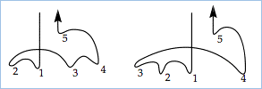
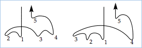

-
Chapter 3
Reading Rhythm
Now that you're familiar with the symbols of rhythm notation, let’s look at how you might go about reading an unfamiliar rhythm.
Peter Prelleur’s The Modern Musick-Master (1730) was
a popular instruction book for aspiring musicians. -
37
Section 1
Subdividing the Beat
The duration of a note depends on the beat, so it may help
to count the beat while reading: 1-2-3, 1-2-3, for example, in 3/4 time. Subdividing the beat by adding an “and” or other syllable helps to keep your tempo steady and also guides you in smaller note values. Movie 3.1 demonstrates counting with the beat subdivided in halves.If there are sixteenth notes in the music you can add two more syllables and count the beat divided in fours, again speaking each syllable at a steady rate, like the ticking of a clock:
Movie 3.2 Counting quarter beats
To divide the beat in fours use the syllables “one - ee - and - a, two - ee - and - a,” etc.
Movie 3.1 Counting half beats
-
38
The basic principle of rhythmic vocalizing is to speak steadily at the speed of the shortest note in the passage, and to use numbers to identify each beat. The actual syllables you speak don’t matter, of course: for beats divided in two or three you could just as easily say “One wump Two wump” and “One bop bop Two bop bop.” All that matters is that the counts are evenly spaced. Nor do you have to count out loud: the counting can all be in your head.
Movie 3.4 shows how to work out the counting for a typical melody. In this 4/4 example there are 4 beats to a bar, each equal to a quarter note, and the shortest note is an eighth. An eighth note is therefore one-half a beat, so we’ll divide each beat into two equally-spaced syllables. A dotted quarter is worth three eighth notes, so it will receive three counting syllables.
Since each beat of a compound meter divides in three parts you could count a 6/8 measure with “One-and-a, Two-and-a,” as in Movie 3.3.
Movie 3.3 Counting in compound meter (Telemann, Overture, Suite in A Minor)
Movie 3.4 Counting dotted rhythms by subdividing the beat
Subdividing is especially helpful for counting dotted notes, which each get three syllables.
-
39
Mental Conducting
Another help in reading rhythm is to “conduct” the music in
your imagination. In fact, even when you already understand
the rhythm, mental conducting is a good way to keep your place without losing the beat. Before trying mental conducting you should practice some actual conducting movements, as follows.Try swinging your arm loosely from side to side, noticing how
it accelerates into the bottom of the swing and slows down as it approaches the top of each swing, just like a pendulum. Once
your arm is swinging in a relaxed and free manner, slowly bring your wrist up by bending your elbow and reduce the movement until only your forearm is swinging back and forth from left to right – with a downward emphasis on the outward swing.
Now you are beating the time in two, as in 2/2 or 2/4, or 6/8 (remember that 6/8 usually has two beats per measure).Notice that the downward swing of the hand has stronger character than the upward swing – it represents the stronger downbeat while the return of the hand marks the weak upbeat. You can use a similar motion of the arm to swing into these
other patterns, which indicate 3 and 4 beats per measure
(the illustrations are for the right arm — everything is reversed
if you are left-handed). The numbers in the drawings are placed roughly at the “bottom” of the swings to show you that there’s a slight downward emphasis marking each beat. In all the patterns the downbeat has what seems like the greatest importance and the last beat of the measure is a preparation for the next downbeat. Remember also that the drawings are only approximate!Suggested Practica Musica Activities 3.1
• Beginning Rhythm Tapping
• Beginning Tapping With RestsTap the notated rhythm. Pitches are provided.

Figure 3.2
Conducting a two-beat measureFigure 3.1 Conducting in three and four
-
40
To conduct an asymmetrical meter you need to think about how the rhythm is divided within each measure. For example, 5/4 can be either 2 + 3 or 3 + 2. As in the other diagrams, these illustrations are only approximate! Few conductors
will follow such a pattern precisely. 
Figure 3.3 Conducting a five beat measure
Review 3.1
1. Counting and subdividing the beat out loud or in
your head is a good method for learning an unfamiliar rhythm. It helps to subdivide each beat into halves, quarters, or thirds, as appropriate. Subdividing is particularly helpful for counting dotted rhythms.2. The conducting patterns will also guide you in understanding rhythm. Mental conducting can help you to keep your place and it suggests the metric accents of each meter.
3. Reading an asymmetrical meter is easier if you group its beats into threes and twos. These groupings are reflected in the conducting patterns for asymmetrical meters.
-
41
Section 2
More on Metric Accents
In Chapter 2 you learned that different meters can be recognized by their metric accents. In any meter each measure will begin
with a primary accent on the downbeat, and certain meters, such as 4/4, can also have a weaker secondary accent. The accents may be subtle. In the examples at right we show them by changes in loudness, but in real music the accent may only be hinted by melodic shape or change of harmony.The third beat in Movie 3.5 is not as strong as the first beat,
but is stronger than beats two and four, which are unaccented weak beats, sometimes called the "offbeats Offbeats The weak beat or beats in a metric pattern. In 4/4 meter, beats 2 and 4 are considered offbeats. Rock music and syncopated rhythms place emphasis on the offbeats. “Backbeat” is a term used by pop musicians to refer to the weak beats. ." This doesn’t mean that every measure of every piece in 4/4 meter will follow this pattern of weak and strong beats! Altering the usual metric accents is one way that composers add rhythmic interest to
their music.You’re probably familiar with the pattern of strong and weak beats shown in Movie 3.6. Rock music reverses the usual pattern of metric accents and emphasizes the weak beats. This off-center emphasis of rock does not actually change the strong nature of the first and third beats, however. It’s really a kind of syncopation (see Chapter 4), which gives a special emphasis to weak beats
with the understanding that they will still be perceived as weak.Movie 3.5 Secondary accents in 4/4 meter
4/4 meter has a secondary accent on beat 3.
Beats 2 and 4 are the "offbeats."Movie 3.6 Accented weak beats
-
42
Pop musicians sometimes refer to these “misplaced” accents as backbeat. So the melody is designed to have its important notes on the strong beats, while the accompaniment emphasizes the two and four,
as in this stereotypical rock tune shown at right.Be careful not to overdo metric accents; they will come naturally without much deliberate effort to produce them. The accented note doesn’t have to be louder than the others – it might only be held a little longer. Sometimes the accents are indicated well enough by the harmonic accompaniment (perhaps a new harmony will be played on the accented notes). In some cases proper expression can even require suppressing metric accents altogether. Generally, however, the metric accents should be communicated because they give each meter its character; they are part of the reason why a musician can hear that a piece is in 3/4 rather than 6/8 without seeing the music.
As an example of how meter can alter a melody’s character, let’s compare two different versions of the melody “Greensleeves,” first in 3/4 meter and then in 6/8. If written in 3/4, this tune would be conducted in three beats per measure with the accent falling on every downbeat. If the tempo were very fast, it would be conducted in one beat per measure.
Movie 3.7 Rock music emphasizes the offbeats
Movie 3.8 Metric accents in 3/4
-
43
The choice of “important notes” comes out differently in a 6/8 version of the same melody, which would be conducted in two instead of three. Here the primary accent falls on the downbeat and a secondary, weaker accent falls on the second beat:
The 6/8 version is more fluid, with fewer accents; the 3/4 version is perhaps more solemn – it’s a matter of interpretation.
Movie 3.9 The same melody in 6/8 has different metric accents.
Suggested Practica Musica Activities 3.2
• Begin Writing Rhythm: Enter note values and bar
lines in the staff. Pitches are provided.
-
44
Beyond The Written Note
It’s important to remember that music notation is not meant to be a complete mathematical description of the sound – a complete description would be very complicated and hard to read. Written music requires interpretation. Great performers rarely play the same piece twice in the same way, yet all their performances are correct readings; what we are doing now is just the first step – learning to understand the basic design provided by the notation.
The additions made in interpretation are often subtle and may take experience to appreciate fully. In a group of quarter notes that all look the same on the page some may be played with more “air” between them, a variation that falls under the heading of change in articulation Articulation Refers to the manner in which notes are joined together and how they’re attacked.
A group of notes may be connected by a slur mark, in which case there’s no space whatsoever between them, or they may be marked staccato, which tells the performer that the notes are to be separated from one another by “air.” Articulation markings are used to specify how long or short an unslurred note is to be played: the wedge is for an extremely short note and a tenuto mark tells the performer to hold out the note as long as possible (without actually joining it to the next note).
An accent or sforzando mark instructs the performer to play the note with a strong attack. .And there may sometimes be a certain freedom with the tempo, known as rubato Rubato A performance instruction or style of interpretation that allows for a certain amount of rhythmic freedom. Most common in Romantic era compositions, a rubato tempo is somewhat elastic, slowing a bit and then accelerating to achieve maximum effect. , which may include speeding up (accelerando) or slowing down (ritardando). A note may sometimes be brought into prominence by an agogic accent Agogic Accent An accent created by some variation in note length or timing, rather than loudness or pressure. – an accent produced by playing the note a tiny bit early or late (the word agogic refers to all accents made by changes in note length or timing). And here we’re only speaking of rhythmic variation; there are many other ways that two performances can vary without either being incorrect.
An easy-to-hear example of rhythmic freedom can be heard in the beginning of this waltz by Frederic Chopin. The rubato does not appear in the score but pianists know to play this freely.
Movie 3.10 Rhythmic freedom in Chopin’s Valse op. 64 No. 2
-
45
Review 3.2
1. Music in 4/4 time has a primary accent on the first beat and a secondary accent on the third beat. These metric accents are shown sometimes by greater loudness, sometimes by greater length of accented notes, sometimes by harmonic changes in the accompaniment. Sometimes the performed accents can contrast the accents of the meter, as in rock music’s emphasis of offbeats.
2. Meter can alter a melody’s character. For example, the same melody can sound differently if performed in 3/4 rather than 6/8.
3. Written music requires interpretation – the printed music is not a literal transcription. An understanding of performance traditions is needed to perform written music well.
4. An expressive performance may involve subtle variations in the tempo. The term rubato refers to a slight speeding up (accelerando) and slowing (ritardando) of the tempo. Agogic accents affect a note’s length or timing (rather than its volume).